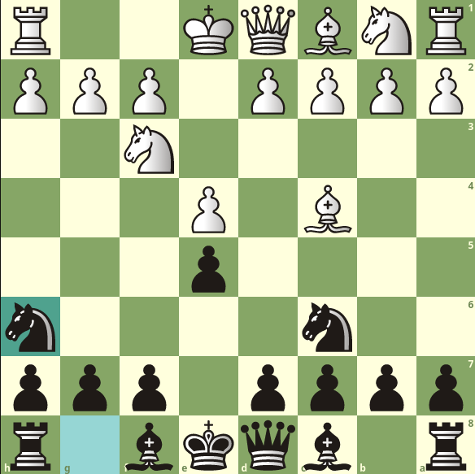
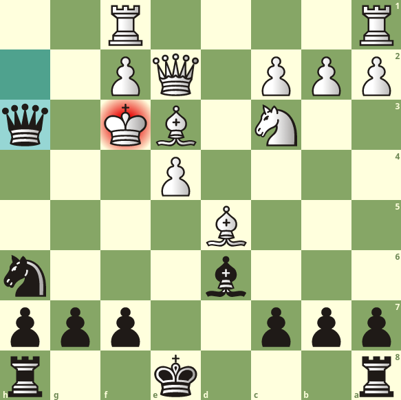
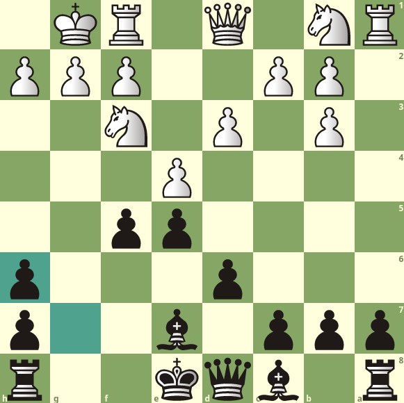
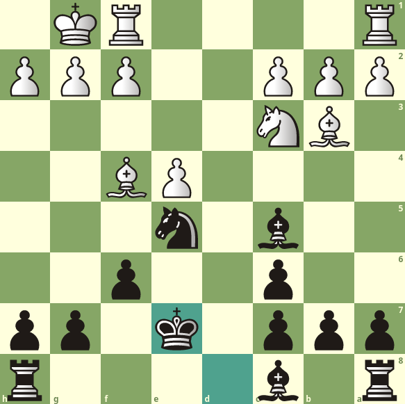

This site is to document the growth of the Anti-Jerome Opening. It was made as an alternative to the Giuoco Piano and Two Knights Defense, both of which are subject to dangerous gambits, being the Jerome Gambit and Fried Liver Attack respectively. When looking at the lines, I recommend using the Lichess study Here or following along on your own analysis board.
The Anti-Jerome opening is a response to the italian game as black. The sequence is 1. e4 e5 2. Nf3 Nc6 3. Bc4, and black plays the rather strange 3... Nh6?!. While this looks much better for white, it is definitely playable and there is much less theory developed here. It would be very easy to catch an opponent off guard and get a strong attack or relatively equal endgame.
There's a dangerous line a lot of beginner players might fall into. 1. e4 e5 2. Nf3 Nc6 3. Bc4 Nh6 4. 0-0 d6 5. d4 Bg4 6. dxe5 Nxe5 7. Qe2 Bxf3 8. gxf3 Qh4. White has given themself a weak king, and developing normally like most beginners are told will most likely result in checkmate. 9. Be3 d5 10. Bxd5 Bd6 11. Nc3. Black now has forced checkmate in 3 moves. 11... Nxf3+. It is easy to see the checkmate on h2 if white captures the knight or plays Kh1. 12. Kg2 Qxh2+ 13. Kxf3 Qh3#. A rare line, but somewhat easy to fall into if you're not paying attention, especially in blitz or bullet.
Most of the time, you won't get such an easy checkmate. A lot of the positions that arise from the Anti-Jerome are slightly better for white, but if white makes a mistake, you will be equipped to punish them. If white plays more cautiously, you can still try to get an attack going. 1. e4 e5 2. Nf3 Nc6 3. Bc4 Nh6 4. d3. We would love if white takes our knight on h6. Recapturing with the pawn gives an open file on the kingside, right where white's king would go if they were to castle short. 4... d6 5.0-0 Na5, going after white's most active piece. 6. Bb3 Nxb3. There are few moves white can play to discourage you from capturing the bishop. if Bd5, c6 prepares d5 and your knight will get that bishop anyway. 7. axb3 f5 8. Bg5 Be7 9. Bxh6 gxh6. The open file on the king is not as dangerous, as the bishop on e7 somewhat prevents the queen from maneuvering toward the white king. Likely, you will want to trade queens as your kingside is too weak to castle, and your queenside has a rook staring at it. White has a better pawn structure but black has the bishop pair, this position will almost definitely come down to an endgame.
The true test of an Anti-Jerome player's knowledge of the opening is when white plays 4. d4. White is trying to call your bluff and open up the center where he has better piece activity. 4... exd4 5. Nxd4 Bc5 6. Nxc6 dxc6, simply trading some pieces. We don't take his knight on d4 because we would lose our most developed piece and he will simply replace his knight with his queen. 7. Qxd8 Kxd8. It may look like Bxh6 gxh6 Bxf7 wins a pawn, but black simply replies with Rf8. When the bishop moves, the pawn on f2 will be free and the position will be slightly better for black. 8. Bf4 Ng4 9. 0-0 f6. f6 may look random at first but it simply prepares Ne5. 10. Nc3 Ne5 11.Bb3 Ke7. Ke7 is a beautiful move, prepares Be6 to trade the bishops, helps connect the rooks on the back rank, and moves out of the d file where your rook can now cut across the board.
